Elementos de la aplicación
Vesta se encuentra distribuido en cuatro menús:
Cada menú cuenta con funciones específicas que se describirán de acuerdo con la prioridad de uso.
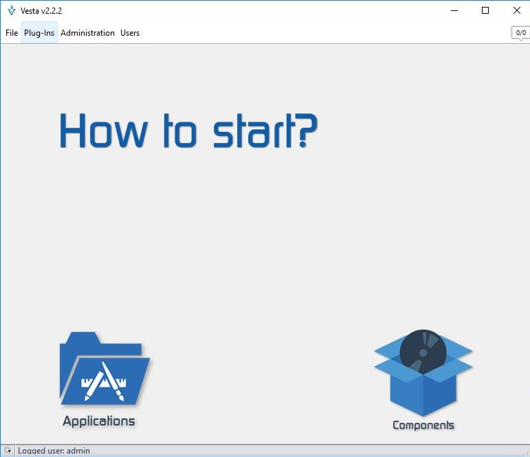
Menú Users
En este menú se encuentran las configuraciones básicas sobre los usuarios.
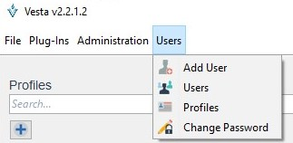
Nota
Un usuario es la persona que tendrá acceso de la aplicación para su manipulación.
Add Users
En esta opción se pueden agregar usuarios. Un usuario debe estar asociado a un perfil, el perfil cuenta con permisos, por lo tanto, los permisos del perfil son los permisos que tendrá el usuario dentro de la aplicación.
Para crear el usuario se accede a:
Click Users > Add User
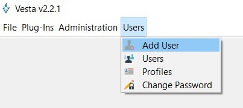
Al ingresar a esta opción, se muestra la siguiente ventana en la cual se ingresan los datos:

- Login: Es el usuario de acceso al sistema
- Password: Contraseña de acceso al sistema. Esta contraseña deberá cumplir con las reglas de seguridad establecidas por la aplicación, pero se debe tener en cuenta que será cambiada al ingresar al sistema.
- Confirm password: volvemos a ingresar la contraseña.
- Profile: Define el perfil y con ello los permisos de acceso
- Name: Nombre descriptivo del usuario dentro del sistema.
- Comment: Comentarios adicionales.
- Change to the next logging in: Para cambiar el password en el siguiente acceso a la aplicación (por seguridad es obligatorio no editable)
- Save: una vez completa la información, se guarda.
Nota
Los criterios de seguridad son establecidos en el menú Administration > System Prameters
Users
En esta opción se muestran los usuarios de la aplicación creados automáticamente y los que se hayan creado manualmente.
Click Users > Users

La siguiente pantalla permite visualizar los usuarios definidos dentro de la aplicación. El usuario admin cuenta con todos los permisos y el usuario monitor se encuentra limitado de permisos. Si se crean mas usuarios, estos deben mostrarse en la ventana:

Nota
Usuarios con el permiso “Edit User”, podrán modificar el password y el perfil de otro usuario.
Profiles
Un perfil es una agrupación de permisos con funcionalidades específicas dentro de la aplicación. Todos los usuarios deben estar asociados a un perfil, ya que este le permitirá manipular el sistema de acuerdo a los permisos otorgados por el perfil.
Click Users > Profiles
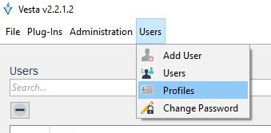
La siguiente pantalla muestra los diferentes perfiles definidos dentro de la aplicación. Se pueden generar tantos perfiles como combinación de permisos sean necesarios.
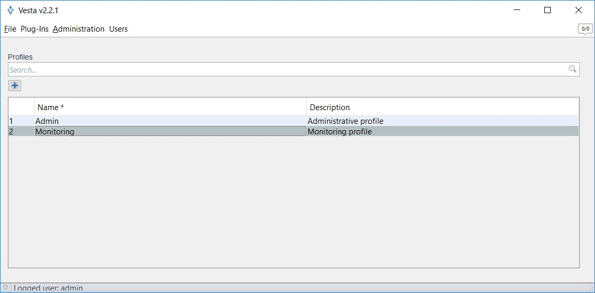
La siguiente pantalla muestra los diferentes perfiles definidos dentro de la aplicación. Se pueden generar tantos perfiles como combinación de permisos sean necesarios.

El icono del signo mas habilita un nuevo registro en modo edición permitiendo la captura de un nuevo perfil.
View Permissions
Cada “Perfil” cuenta con una serie de permisos que podrán ser listados seleccionando la opción “View permissions” del menú emergente.
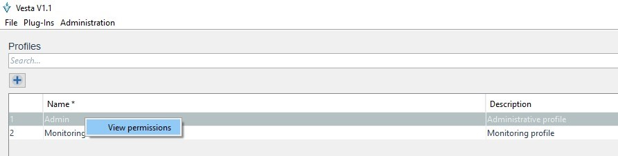
En la siguiente pantalla se podrán seleccionar los permisos asociados a un Perfil.
Cada permiso otorga acceso a botones o funcionalidades específicas dentro de la aplicación y sobre los usuarios. Se debe ser cuidadoso en elegir el tipo de permisos que tendrá el perfil.
Change Password
Es posible poder cambiar la contraseña del usuario una vez que se encuentre dentro de la aplicación.
Click Users > Change password
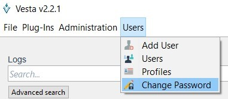
El usuario debe tener permisos para modificar el password de otro usuario. Ver sección de perfiles y permisos. El nuevo password debe cumplir las reglas de password según se indique en los parámetros de sistema. Ver sección de parámetros de sistema.
En la siguiente pantalla el usuario será capaz de modificar su password de ingreso de manera personal.

Escribir la actual contraseña y posteriormente asignar la nueva confirmándola nuevamente, considerando los parámetros establecidos.
Menú Administration
Dentro del menú Administración se encuentran tres opciones, la primera que permite ceder el control adquirido sobre las entradas, la segunda opción es de consulta sobre los accesos al sistema con los usuarios que han ingresado y por último se tiene la opción del sistema de parámetros generales de la aplicación.
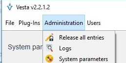
Release all entries
Una vez que se empieza hacer uso de la aplicación Vesta se va adquiriendo el control sobre las entradas de datos para poder manipularlos.
Mediante esta opción puede el usuario liberar el control de todo lo que adquirió en la aplicación para que otro usuario pueda hacer uso de ella o simplemente Liberar todo el control sobre las entradas.
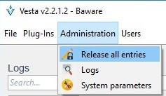
Una vez elegida la opción manda un cuadro de dialogo sobre la pantalla principal, preguntando si esta seguro de dejar el control de las entradas.
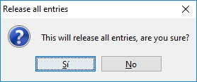
Elegimos la opción conveniente para dejar las entradas disponibles con la opción “Si” o bien, seguir con el control sobre ellas en la opción "No".
Logs
Para tener un registro controlado de los acceso y manipulación de la aplicación, se cuenta con la opción “Log” que permite la consulta de los movimientos realizados
Click Administration > Logs
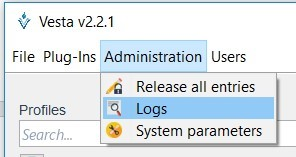
Nota
Es posible realizar búsquedas específicas para encontrar información de manera más precisa.
Búsqueda avanzada
La siguiente pantalla permite visualizar el log de las acciones realizadas por los usuarios dentro de la aplicación, en ella se buscó el usuario admin y se muestran los resultados de las acciones realizadas:
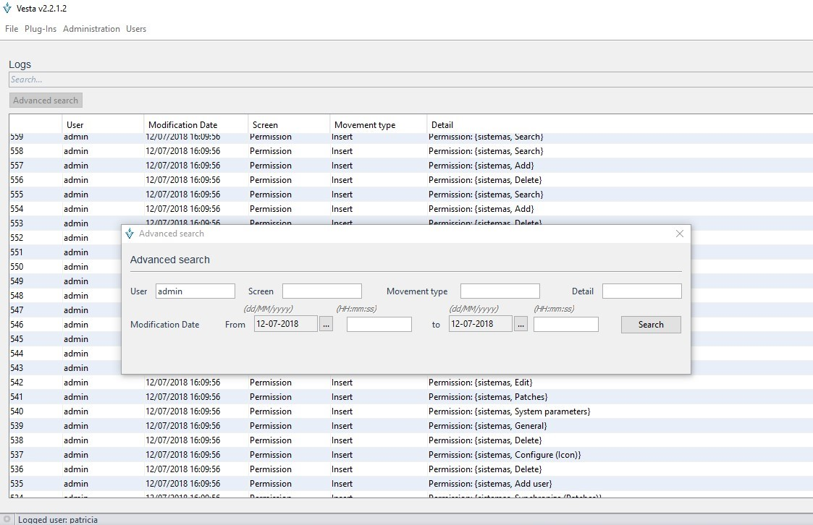
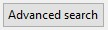 Esta opción permite definir criterios de búsqueda específicos que agilicen la identificación de acciones dentro de la aplicación
System Parameters
En esta opción se pueden manipular los parámetros de configuración de las contraseñas y definir cada cuanto tiempo se actualizará la información en la ventana de las entradas.
Click administracion > system parameters
La siguiente pantalla permite visualizar y modificar los parámetros de sistema.

Password Parameters
Donde se establecen las configuraciones de password tales como notificaciones de expiración, días de password válido y numero de passwords que no podrán ser repetidos.

Password rules
Establezca reglas de validación para establecer nuevos passwords como la longitud, mayúsculas, números y caracteres espaciales.

General parameters and visual parameters
En esta sección se establece cada cuantos segundos debe actualizarse la ventana donde se muestran las entradas de configuración. También se puede establecer el título de la aplicación para que se muestre en la “barra de título”.

Utilice el botón de guardar para almacenar los cambios realizados en los Parámetros de sistema.
Conceptos de Vesta
Esta sección se da una definición sobre cada uno de estos componentes principales para proporcionar un panorama mas fácil de entender sobre lo que son, lo que hacen y cómo funcionan juntos.
Conceptos Básicos
- Vesta
- Propiedades
- Entradas o Entries
- Entradas de configuración
- Components
- Application
- Profile
- Permisions
- Perfil de Usuario
- Application Group
- Environments
- Categories
- Plugin
- Logs